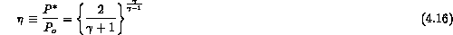
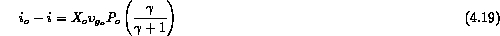
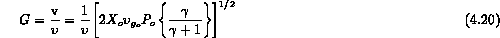

The previous HEM model is applicable to conditions where a liquid and its vapor flow through an outlet in equilibrium. If a homogeneous mixture of a liquid and a gas phase (air-water) flow through an orifice or if nonequilibrium effects are important for a liquid and vapor (due to stratification or a short tube), then mass transfer may be precluded. One might consider this to be a homogeneous flow model where the phases are "frozen" at mass fractions equal to their stagnation conditions. In a sense, given that the phases travel at the same velocity, one may consider this to be another bound on the critical flowrate.
This type of model has appeared frequently in the literature (e.g., Ref. 4) as a "homogeneous frozen model" for critical flow, and is based on the following assumptions
These assumptions lead to a familiar expression for the critical pressure ratio

if the following inequality is valid
Under these assumptions one can write down the energy balance
where for the vapor as a perfect gas one can write

and thus the critical mass velocity becomes

One can observe the difference between the two models as compared to steam-water data at high and low pressures [5,6] in Figures 4.5 to 4.7. In all cases the critical pressure ratio is underpredicted by this model but the critical mass velocity is better predicted at relatively low stagnation qualities. Both models are in error at very low qualities. The ability to predict the flowrate under these conditions is questionable for most models. As we shall discuss in the next section the final model assumption to consider is that of relative velocity between the phases. This along with nonequilibrium effects combined help explain some of the current discrepancies between model and data.